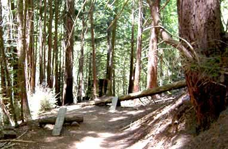
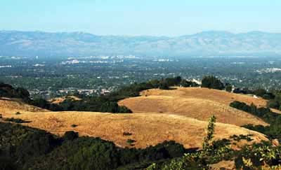

Rides
Calabazas Park
The Dirt Jumps in Calabazas Park were re-opened by the city off San Jose in the summer of 2007.
We recommend riding a BMX or DJ bike.
Location
Corner of Rainbow and Blaney in San Jose. From 85, take the De Anza Exit and once headed east, make your first right onto Rainbow Drive.
Lake Cunningham Skatepark
San Jose's newst skatepark
Bike Hours:
- Tuesday: 3:00 p.m. - sunset
- Thursday: 3:00 p.m. - sunset
- Sunday: 9:00 a.m. - 12:00 p.m.
Location
Southeast corner of Lake Cunningham Park.
2305 S. White Rd,
San Jose, CA 95109
Saratoga Gap Open Space Preserve
Saratoga Gap Open Space Preserve is located in the Santa Cruz mountains where Highway 9 and Skyline Boulevard (Highway 35) meet.
We recommend ride a Full Suspension Mountain Bike. Rental bikes available at our shop from $55 per day.
Location
Highway 9 and Skyline Boulevard (Highway 35). To reach the trailhead, cross Highway 9 located at the northeastern corner of this junction. Parking is available at the Caltrans vista point on the southeast corner of the Skyline Boulevard and Highway 9 intersection.
Demonstration Forest

Demonstration Forest is located in the Santa Cruz mountains off Old San Jose Road. It is full of trails and the epicenter of the Loma Prieta earthquake is located here.
We recommend ride a Full Suspension Mountain Bike. Rental bikes available at our shop for $45 per day.
Location
From Highway 1 in Soquel take Old San Jose Road to the park entrance.
4750 Old San Jose Road
Soquel, CA 95073
Fremont Older

Fremont Older is located in the Santa Cruz mountains above Saratoga. It is full of trails and the epicenter of the Loma Prieta earthquake is located here.
We recommend you ride a Hardtail or Full Suspension Mountain Bike. Rental bikes available at our shop for $45 per day.
Location
From Interstate 280 in Santa Clara County, take CA 85 south for about 2 miles, then exit at DeAnza (turn right at end of ramp). Drive about 0.4 mile toward Saratoga, then turn right onto Prospect Road. After about 0.5 mile, turn left across the railroad tracks at the stop sign, to remain on Prospect. Drive 1 mile more, then turn left at the Fremont Older sign. Continue on this narrow stretch of road for about 0.25 mile to the parking lot at the end of the road.